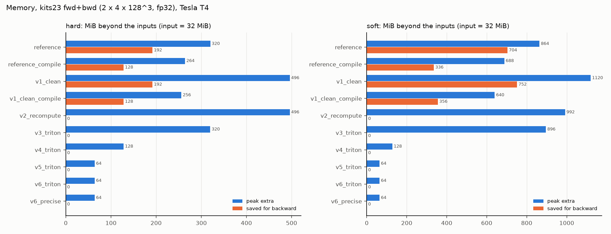

Sprints: S3-S4
3. PyTorch: vectorize, then write the backward by hand
Before writing GPU kernels, two questions are answered in plain PyTorch: how much does removing the Python loop give (Sprint 3, v1), and how much memory does a handwritten backward save (Sprint 4, v2)? Both versions also become references for the kernels: v2's math is exactly what the Triton kernels compute.
v1: one scatter for all slices instead of B x C loops
Concept. The loop over (batch, class) launches 3 scatters per slice. Instead, give
every (b, c) slice its own block of K bins in one flat buffer of size BCK: voxel
i of slice r goes to flat bin r*K + bin(p_i). One scatter then handles all
slices at once.
17def _row_offsets(prep: Prepared, num_bins: int) -> torch.Tensor:
18 """``[B, C, 1]``: first flat bin index of each (b, c) slice."""
19 b, c = prep.probs.shape[:2]
20 rows = torch.arange(b * c, device=prep.probs.device).view(b, c, 1)
21 return rows * num_bins
The trick that removes the loop. Number the B·C slices 0..B·C-1 ([B, C, 1] tensor) and multiply by K: slice r owns flat bins r*K .. r*K+K-1 of one buffer of size B·C·K.
24def _hard(prep: Prepared, config: ACEConfig) -> torch.Tensor:
25 p, y = prep.probs, prep.onehot
26 assert y is not None
27 b, c, _ = p.shape
28 k = config.num_bins
prep (from common.prepare) holds the activated probabilities [B, C, N] and the one-hot target.
29 idx = torch.bucketize(p, hard_edges(k, p.device), right=config.right)
30 flat = (idx + _row_offsets(prep, k)).flatten()
31 size = b * c * k
One bucketize for all slices at once (same edge table as the reference), then the slice offset is added: flat[i] is now a unique bin address across the whole batch.
32 counts = torch.zeros(size, device=p.device).scatter_add(
33 0, flat, torch.ones_like(p).flatten()
34 )
35 mean_p = torch.empty(size, device=p.device).scatter_reduce(
36 0, flat, p.flatten(), reduce="mean", include_self=False
37 )
38 mean_gt = torch.empty(size, device=p.device).scatter_reduce(
39 0, flat, y.flatten(), reduce="mean", include_self=False
40 )
The reference's three scatters, but each once over the flattened batch instead of B·C times: far fewer launches. The atomic collisions are the same (still millions of voxels into K addresses per slice), so the speedup is only 1.2x: the evidence that launches were not the problem.
41 # copy before masking, like the reference's slice assignment: scatter_reduce
42 # needs its untouched output for backward
43 mean_p, mean_gt = mean_p.clone(), mean_gt.clone()
44 mean_p[counts == 0] = torch.nan
45 mean_gt[counts == 0] = torch.nan
Empty bins -> NaN, as in the reference. The .clone() matters for autograd: scatter_reduce needs its output unchanged for its backward, and an in-place mask would corrupt it.
46 return (mean_p - mean_gt).abs().view(b, c, k)
Per-bin absolute gaps [B, C, K]; the shared finalize (nanmean, class mask, weights, reduction) turns them into the loss.
v1_clean then removes the remaining waste: sums instead of scatter_reduce(mean)
(means are computed per bin afterwards), no one-hot target copy (class indices are
used directly), no host-device synchronization. The shared statistics function:
54def hard_stats(prep: Prepared, config: ACEConfig) -> BinStats:
55 p = prep.probs
56 b, c, _ = p.shape
57 k = config.num_bins
58 idx = hard_bin_index(prep, config)
Bin of every voxel and channel, [B, C, N] int64, with the reference's edges and right convention.
59 flat = (idx + rows(prep) * k).flatten()
Same flat addressing as v1 (rows = slice number b·C + c).
60 zeros = p.new_zeros(b * c * k)
61 counts = zeros.scatter_add(0, flat, p.new_ones(()).expand(flat.shape))
62 sum_p = zeros.scatter_add(0, flat, p.flatten())
Sums instead of means. Three scatter_add into fresh zero buffers: count (adds a broadcast scalar 1, no ones-tensor allocated), sum of p. Means are computed later per bin (sum / count), which is cheaper than scatter_reduce(mean) and gives the per-bin sums the handwritten backward needs anyway.
63 if prep.onehot is not None:
64 sum_gt = zeros.scatter_add(0, flat, prep.onehot.flatten())
Target sum. With a one-hot target: scatter it like p (C values per voxel, mostly zeros).
65 else:
66 channel, row, valid = true_class(prep)
67 true_idx = idx.gather(1, channel)
68 sum_gt = zeros.scatter_add(0, (true_idx + row * k).flatten(), valid.flatten())
With class indices (the paper's setting): each voxel has exactly one true class, so only that class's bin gets +1. true_class gives the voxel's class channel; idx.gather looks up the bin of the voxel in that channel. One value per voxel instead of C: no one-hot tensor is ever built.
69 shape = (b, c, k)
70 counts = counts.view(shape)
71 return BinStats(counts, sum_p.view(shape), sum_gt.view(shape), counts == 0)
BinStats(count, sum_p, sum_gt, empty): the whole forward state in four [B, C, K] tensors. Every later implementation (including the Triton kernels) produces exactly this.
Result. Removing the loop alone: 1.2x. The cleanup: 2.6x. With torch.compile
on top: ~5x. Still under 5% of the hardware limit, because the scatters (atomics)
remain. This was the evidence that the next step had to be a custom kernel.
v2: deriving the backward
Concept. Autograd stores whatever the forward computed per voxel (bin indices,
one-hot targets, gathered means) to replay it backwards: 3x the input (hard), 11x
(soft). But the loss only depends on per-bin sums, so the gradient can be written in
terms of tiny per-bin tensors. From docs/derivation.md:
d_k = P_k / W_k - G_k / W_k (mean p minus mean y in bin k)
df/dp_i = sum over bins j of voxel i: s_kj / (K_ne W_kj) * [ w_ij + w'_ij (p_i - y_i - d_kj) ]
with s_k = sign(d_k), K_ne = number of non-empty bins, w the bin weight of
the voxel and w' its derivative. For hard binning w = 1, w' = 0, so every
voxel in bin k gets the same gradient:
df/dp_i = sign(d_k) / (K_ne * W_k) =: coef_k
The backward therefore needs only coef and d: two [B, C, K] tensors (640 bytes
for B=2, C=4, K=20), plus the inputs that the caller holds anyway. It recomputes each
voxel's bin from p instead of storing it.
66def coefficients(
67 stats: BinStats,
68) -> tuple[torch.Tensor, torch.Tensor, torch.Tensor, torch.Tensor]:
69 """Per-class error ``f`` [B, C], class presence, and the per-bin ``coef``, ``d``."""
70 d = bin_difference(stats)
d_k = sum_p/W - sum_y/W per bin (two divisions then subtract, exactly like the reference's two means, so the sign at exact ties matches), 0 for empty bins.
71 f = torch.nanmean(per_bin_error(stats), dim=-1)
Per-class loss f = mean over non-empty bins of |d_k| (empty bins are NaN and skipped), [B, C].
72 nonempty = ~stats.empty
73 k_ne = nonempty.sum(-1, keepdim=True).clamp_min(1).to(d.dtype)
K_ne, the number of non-empty bins per (b, c), [B, C, 1] so it broadcasts over bins. clamp_min(1) avoids dividing by zero when every bin is empty (then all coef are 0 anyway).
74 safe_w = torch.where(nonempty, stats.weight, torch.ones_like(stats.weight))
75 coef = torch.where(nonempty, torch.sign(d) / (k_ne * safe_w), torch.zeros_like(d))
coef_k = sign(d_k) / (K_ne · W_k): the derivative of f with respect to each voxel's probability in bin k (hard binning). Empty bins get 0 (no voxel can receive gradient from them). safe_w avoids 0/0 = NaN in the discarded branch of where (NaN would poison the gradient even when not selected).
76 return f, class_present(stats), coef, d
Class presence from the stats (sum_k G_k > 0, equal to target.sum() > 0): saves reading the target again.
88def _df_dprobs(
89 prep: Prepared, coef: torch.Tensor, d: torch.Tensor, config: ACEConfig
90) -> torch.Tensor:
91 """``[B, C, N]``: d f_bc / d p_bci (derivation: sum over the voxel's bins)."""
92 if config.binning == "hard":
93 return coef.gather(2, hard_bin_index(prep, config))
Hard: every voxel gets the coefficient of its own bin. hard_bin_index recomputes the bins from p (nothing was stored), gather reads coef[b, c, bin] for each voxel: [B, C, N].
94 p = prep.probs
95 a = soft_assign(p, config.num_bins, config.right)
96 inv_span = 1.0 / a.span
Soft: recompute each voxel's two neighbouring bins, weights and span S (soft_assign, the same function as the forward).
97 resid = p - _true_target(prep) # p_i - y_i
98 left = coef.gather(2, a.left_idx) * (
99 a.left_w - inv_span * (resid - d.gather(2, a.left_idx))
100 )
101 right = coef.gather(2, a.right_idx) * (
102 a.right_w + inv_span * (resid - d.gather(2, a.right_idx))
103 )
104 return left + right
The derivation's formula per side j ∈ {left, right}: coef_j · (w_j + w'_j (p - y - d_j)) with w'_left = -1/S, w'_right = +1/S. The w' term exists because moving p also moves the voxel's weights between the two bins.
The autograd.Function ties it together; mode selects what is saved:
196class _ACELoss(torch.autograd.Function):
197 @staticmethod
198 def forward(
199 ctx: Any,
200 input: torch.Tensor,
201 target: torch.Tensor,
202 config: ACEConfig,
203 mode: Mode,
204 backend: StatsBackend,
205 ) -> torch.Tensor:
A custom torch.autograd.Function: we write forward and backward ourselves; autograd does not record the operations inside forward, so it stores nothing on its own.
206 prep = prepare(input, target, config, keep_labels=True)
207 f, present, coef, d = _bin_coefficients(prep, config, backend)
208 loss = reduce_classes(f, prep, config, present)
209 ctx.config = config
210 ctx.mode = mode
211 ctx.precomputed = mode == "grad_in_fwd" and config.reduction != "none"
Forward: activation, statistics, coefficients, loss. All voxel-sized intermediates are temporaries, freed when forward returns.
212 if mode == "triton_bwd": # tiny saves only: coef and the reduction's jacobian
213 jac = _reduction_jacobian(f, prep, config, present)
214 ctx.save_for_backward(input, target, coef, d, jac)
215 elif ctx.precomputed: # gradient for upstream 1, scaled in backward
216 unit = torch.ones((), device=loss.device, dtype=loss.dtype)
217 grad = _input_grad(input, target, config, coef, d, unit, present)
218 ctx.save_for_backward(grad)
219 else:
220 ctx.save_for_backward(input, target, coef, d, present)
221 return loss
222
223 @staticmethod
What to keep for backward (ctx.save_for_backward), by mode: triton_bwd (v4) and recompute (v2) save the inputs (which the caller holds anyway: no extra memory) plus the [B, C, K] coef / d and a [B, C] tensor. grad_in_fwd instead computes the full input gradient now (for an upstream gradient of 1) and saves only that.
224 def backward(ctx: Any, grad_output: torch.Tensor) -> tuple[Any, ...]:
225 if ctx.mode == "triton_bwd":
226 input, target, coef, d, jac = ctx.saved_tensors
227 grad = _triton_input_grad(
228 input, target, ctx.config, coef, d, jac, grad_output
229 )
230 return grad, None, None, None, None
231 if ctx.precomputed:
232 (unit_grad,) = ctx.saved_tensors
233 return grad_output * unit_grad, None, None, None, None
234 input, target, coef, d, present = ctx.saved_tensors
235 grad = _input_grad(input, target, ctx.config, coef, d, grad_output, present)
236 return grad, None, None, None, None
Backward receives dL/dloss (grad_output) and must return one gradient per forward input (None for target, config, mode, backend). grad_in_fwd: scale the precomputed gradient. recompute: rebuild everything from inputs + coef (_input_grad: _df_dprobs, upstream factor, activation backward).
Worked example: the formula vs autograd
The 8-voxel example from page 1, now with gradients. The handwritten formula, the v2 implementation and autograd through the original code must agree:
import torch
from ace_kernels import ACEConfig, ace_loss
p = torch.tensor([[[0.05, 0.10, 0.30, 0.45, 0.60, 0.80, 0.90, 0.95]]])
y = torch.tensor([[[0.0, 0.0, 0.0, 1.0, 1.0, 0.0, 1.0, 1.0]]])
config = ACEConfig(num_bins=4, activation="none")
grads = {}
for impl in ("reference", "v2_recompute"):
leaf = p.clone().requires_grad_(True)
ace_loss(leaf, y, config, impl=impl).backward()
grads[impl] = leaf.grad.flatten()
edges = torch.linspace(0, 1 + torch.finfo(torch.float32).eps, 5)[1:]
bins = torch.bucketize(p, edges).flatten()
k_ne = len(bins.unique())
by_hand = torch.empty(8)
for i, k in enumerate(bins.tolist()):
m = bins == k
d = p.flatten()[m].mean() - y.flatten()[m].mean()
by_hand[i] = torch.sign(d) / (k_ne * m.sum()) # coef_k = sign(d_k) / (K_ne W_k)
print("bin ", bins.tolist())
print("by hand ", [round(v, 4) for v in by_hand.tolist()])
print("v2_recompute", [round(v, 4) for v in grads["v2_recompute"].tolist()])
print("reference ", [round(v, 4) for v in grads["reference"].tolist()])
bin [0, 0, 1, 1, 2, 3, 3, 3] by hand [0.125, 0.125, -0.125, -0.125, -0.25, 0.0833, 0.0833, 0.0833] v2_recompute [0.125, 0.125, -0.125, -0.125, -0.25, 0.0833, 0.0833, 0.0833] reference [0.125, 0.125, -0.125, -0.125, -0.25, 0.0833, 0.0833, 0.0833]
Bin 3 is over-confident (gap +0.217), so its voxels get a positive gradient: gradient descent lowers their probabilities. Bins 1 and 2 are under-confident and get pushed up.
Measuring what autograd stores
The saved-tensor hooks of PyTorch see every tensor autograd keeps for backward. The harness wraps a call and sums their sizes (excluding the inputs):
38def measure_saved_tensors(
39 fn: Callable[[], torch.Tensor], exclude: Sequence[torch.Tensor] = ()
40) -> tuple[torch.Tensor, SavedTensorStats]:
41 """Run ``fn`` and record every tensor autograd saves for backward."""
42 stats = SavedTensorStats()
43 seen: set[int] = set()
44 excluded = {t.untyped_storage().data_ptr() for t in exclude}
Runs fn (a loss call) and reports every tensor autograd saved for backward. exclude: tensors that do not count (the inputs, which exist anyway).
46 def pack(t: torch.Tensor) -> torch.Tensor:
47 storage = t.untyped_storage()
48 nbytes = storage.nbytes()
49 stats.tensors.append(SavedTensor(tuple(t.shape), t.dtype, nbytes))
50 ptr = storage.data_ptr()
51 if ptr not in seen:
52 seen.add(ptr)
53 stats.unique_bytes += nbytes
54 if ptr in excluded:
55 stats.excluded_bytes += nbytes
saved_tensors_hooks(pack, unpack) calls pack for every tensor an operation saves. We record shape, dtype and storage size; storages are de-duplicated by data pointer (several saved views of one tensor count once).
56 # Return a detached alias (same storage), not ``t`` itself: for tensors an
57 # op saves as its *output* (e.g. softmax), keeping ``t`` creates the cycle
58 # tensor -> grad_fn -> saved tensor -> tensor through C++ autograd nodes,
59 # which gc cannot collect. That leaked ~4x the input per call on a T4.
60 return t.detach()
61
62 def unpack(t: torch.Tensor) -> torch.Tensor:
63 return t
The leak bug. Returning t itself kept a reference cycle through C++ autograd nodes that Python's garbage collector cannot see: each call leaked ~4x the input of GPU memory, and later benchmark groups ran out of memory (38 false OOM rows in Sprint 3). Returning t.detach() (same memory, no autograd link) fixed it.
65 with torch.autograd.graph.saved_tensors_hooks(pack, unpack):
66 out = fn()
67 return out, stats
The hooks are active only while fn runs.
import torch
from ace_kernels import ACEConfig, ace_loss
from ace_kernels.cases import InputSpec, make_inputs
from ace_kernels.instrumentation import measure_saved_tensors
for binning in ("hard", "soft"):
config = ACEConfig(binning=binning, to_onehot_y=True)
x, y = make_inputs(InputSpec(2, 4, (32, 32, 32)), config)
x.requires_grad_(True)
for impl in ("reference", "v2_recompute"):
_, stats = measure_saved_tensors(lambda: ace_loss(x, y, config, impl=impl), exclude=[x, y])
print(f"{binning} {impl:13s} saved for backward: {stats.extra_bytes / x.nbytes:5.2f} x input")
hard reference saved for backward: 3.00 x input hard v2_recompute saved for backward: 0.00 x input soft reference saved for backward: 11.00 x input soft v2_recompute saved for backward: 0.00 x input
Evidence

Proves: from v2 on, nothing voxel-sized is saved (saved bytes ~0); peak memory drops further when the kernels stop materializing probabilities (v5).
| binning | shape | impl | ms | saved MiB | peak MiB |
|---|---|---|---|---|---|
| hard | amos-b4 | reference | 1875.3 | 1452.0 | 2511.0 |
| hard | amos-b4 | v1_clean | 430.3 | 1452.0 | 2753.0 |
| hard | amos-b4 | v2_recompute | 468.7 | 0 | 2753.0 |
| hard | amos-b4 | v2_grad_in_fwd | 473.4 | 484.0 | 2904.0 |
| hard | cube192 | reference | 341.6 | 648.0 | 1080.0 |
| hard | cube192 | v1_clean | 132.6 | 648.0 | 1674.0 |
| hard | cube192 | v2_recompute | 162.5 | 0 | 1674.0 |
| hard | cube192 | v2_grad_in_fwd | 165.1 | 216.0 | 1674.0 |
| hard | cube256 | reference | 806.8 | 1536.0 | 2560.0 |
| hard | cube256 | v1_clean | 316.0 | 1536.0 | 3968.0 |
| hard | cube256 | v2_recompute | 380.0 | 0 | 3968.0 |
| hard | cube256 | v2_grad_in_fwd | 386.1 | 512.0 | 3968.0 |
| hard | cube288 | reference | 1146.6 | 2187.0 | 3648.0 |
| hard | cube288 | v1_clean | 449.8 | 2187.0 | 5650.0 |
| hard | cube288 | v2_recompute | 542.1 | 0 | 5651.0 |
| hard | cube288 | v2_grad_in_fwd | 545.2 | 729.0 | 5650.0 |
| soft | amos-b4 | reference | 4063.0 | 5324.0 | 6604.0 |
| soft | amos-b4 | v1_clean | 1082.0 | 5051.8 | 7744.0 |
| soft | amos-b4 | v2_recompute | 1137.2 | 0 | 6776.0 |
| soft | amos-b4 | v2_grad_in_fwd | 1143.7 | 484.0 | 7260.0 |
| soft | cube192 | reference | 591.3 | 2376.0 | 2926.0 |
| soft | cube192 | v1_clean | 373.4 | 2538.0 | 3780.0 |
| soft | cube192 | v2_recompute | 404.9 | 0 | 3348.0 |
| soft | cube192 | v2_grad_in_fwd | 407.4 | 216.0 | 3348.0 |
| soft | cube256 | reference | 1408.6 | 5632.0 | 6912.0 |
| soft | cube256 | v2_recompute | 954.0 | 0 | 7936.0 |
| soft | cube256 | v2_grad_in_fwd | 962.4 | 512.0 | 7936.0 |
| soft | cube288 | v2_recompute | 1364.4 | 0 | 11302.0 |
| soft | cube288 | v2_grad_in_fwd | 1366.8 | 729.0 | 11303.0 |
Try it
$ uv run pytest tests/test_v2.py -vgradcheck in float64 against finite differences, equality with autograd, saved bytes = 2BCK4 + B*C
$ uv run pytest tests/test_saved_tensors.py -vthe saved-tensor measurement itself is tested